The first step of prompting the the DeepFloyd IF diffusion model is to convert text prompts into high-dimension vector embeddings, which are directly interpretable by the model. To do so, I used the DeepFloyd IF T5 text encoder convert my text prompts into embeddings. Here are my prompts for random images, visual anagrams, and hybrid images:
To test the model on these prompts, I chose three of the embeddings and generated images from them. For all of these tasks, I used a random seed of 12102025. The following are the results:
| Prompt / Caption | Image | Analysis |
|---|---|---|
| A photo of a student studying at the library | Here, the prompt is moderately specific and descriptive of the desired output. Consequently, the resulting image matches the intent of the prompt pretty well. One thing to note is that since the background is very detailed (libraries have hundreds of small detailed books and objects around them), the background quality is limited in comparison to the other images. | |
| A photo of warm weather | 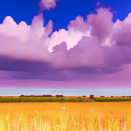 | The prompt is somewhat abstract, since "warm weather" can look like a number of different things. Regardless, the model is still able to produce an image that matches the prompt, though it may differ a bit more from the user's intented results by nature of the vagueness of the prompt. |
| A photo of a cat lying upside down playing with a ball of yarn | |
This prompt is a lot more specific than the one about warm weather. The details of the cat and the patterned yarn are captured quite well, and it is likely that this is the kind of image the user was aiming to receive. One interesting observation is that the cat is not "lying upside down," though perhaps it is ambiguous as to what this exactly means. |
All of the above images were generated with 20 inference steps. To test the impact of the number of inference steps, I regenerated the image of the student with 200 inference steps instead, which resulted in the following image:
We can see that there are many more details in the image itself, which are specifically visible in the background (individual books, shelves, symbols, etc.) and in the objects (laptop keys and jacket folds, for example). This is due to the increase in the number of inference steps.
I implemented the diffusion forward process, which adds noise to the original (clean) image. This is the result of forward processing an image of the Campanile at various time steps:
Left to right: t = 0 (original), 250, 500, 750
 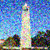
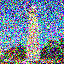
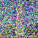
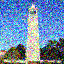
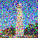
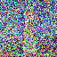
The results of attempting to denoise the above images using Gaussian blurring are shown below (left to right: t = 250, 500, 750):
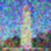 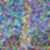Next, I attempted to denoise the noisy images using one-step denoising with the pretrained diffusion model by reversing the forward process. The results are shown below (left to right: t = 250, 500, 750; top to bottom: original image, noisy image, denoised image):
The final method for denoising is iterative denoising. The following is a visualization of the noisy Campanile image every fifth loop of denoising, which gradually get less noisy expected (from right to left, as t decreases). From left to right, the time steps are t = 90, 240, 390, 540, 690:
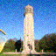 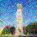 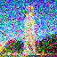 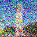 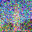The following is a comparison of the original image (leftmost) to the three implemented denoising methods (left to right: iterative, one-step, and gaussian blur). As expected, iterative denoising performs the best:
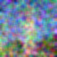
The following is the result of 5 random samples from noise using the prompt "a high quality photo":
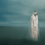 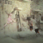The following is the result of 5 random samples from noise using CFG with scale 7:
The following is the result of edits (via CFG iterative denoising) to the Campanile at noise levels 1, 3, 5, 7, 10, and 20 (left to right), followed by the original image of the Campanile (rightmost). As expected, they increasingly look like the original Campanile:

The same procedure is applied to an image of a coffee mug, showing noise levels 1, 3, 5, 7, 10, and 20 (left to right) and the original image of the Campanile (rightmost):
Finally, the same visualization is shown for an image of a balloon (same ordering):
The same SDEdit algorithm is applied to the following drawing of a banana from the internet (same ordering):
The following is the same result on a hand-drawing of a house:
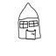 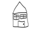The following is the same result on a hand-drawing of a butterfly:
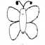 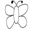I implemented the logic for inpainting, resulting in the following results for the campanile:


Inpainting results for an image of a tree:
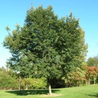 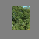Inpainting results for an image of a dog:
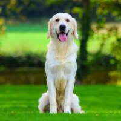
Next, I tried guiding the denoising process by providing a more meaningful prompt. The following is the result of denoising the Campanile at noise levels 1, 3, 5, 7, 10, and 20 (left to right), followed by the original image of the Campanile (rightmost), with the prompt "a wooden pencil". While the images increasingly look like the original Campanile like before, they also have a style of a pencil from the prompt:
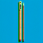
Denoising the image of the coffee cup with the prompt "a ball of yarn":
Denoising the image of the hot air balloon with the prompt "a pear":
The following is the resulting anagram from the prompts: "an oil painting of an old man" (rightside up) and "an oil painting of people around a campfire" (upside down):
The following is the resulting anagram from the prompts: "a sketch of a frog sitting on a log" (rightside up) and "a sketch of a shoe" (upside down):
The following is the resulting anagram from the prompts: "a drawing of science lab" (rightside up) and "a drawing of a meadow" (upside down):
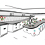 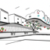The following is a hybrid image between "a skull" (low frequencies) and "a waterfull" (high frequencies):
The following is a hybrid image between "a dog" (low frequencies) and "a cat" (high frequencies):
The following is a hybrid image between "a flower" (low frequencies) and "a woman" (high frequencies):